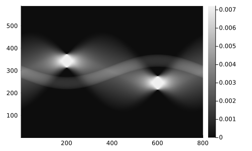

Tutorial
Let's see a brief example on how MartaCT can be used.
As a starting point we prepare the session importing some packages:
using MartaCT, Plots, IntervalSetsNow we can generate our first image from the available test images (see Test Images) for a full list of test images.
img = GrayScalePyramid()
pbg = ParallelBeamGeometry(img, nϕ=800)We can plot the image as
heatmap(img)which produces the image below.
The gray scale values of the image are in Hounsfield units, typically used in medical applications. In this case, where the image is just used to test the algorithm, there is, of course, no meaning in the actual values. We use this scale by default so that it can be used to compare with standard imaging procedures.
Now we can compute the sinogram of img using the function project_image:
sinog = project_image(img, RadonInfo(pbg), progress=false, rescaled=true)
heatmap(sinog)
One can also use the low level function radon.
The reconstruction of the image can be done using the function reconstruct_image or the low level function iradon:
tomog = reconstruct_image(sinog, FBPInfo(pbg), progress=false)
heatmap(tomog)Here we can see that the final scale is not recovered properly: we need to calibrate the image! MartaCT provides a convenient framework for image calibration and analysis. Since we are studying a well defined image, MartaCT knows how to calibrate the resulting image according to the original image. In the general case, this would require to provide at least two ROIs (regions of interest) which are used to calibrate the final image.
We can just do the following
calibrate_tomogram!(tomog, img; window=-1000..1000)
heatmap(tomog)obtaining the final result
The window keyword argument can be used to apply a window filter on the image so that the final interval of values specified through window are displayed.